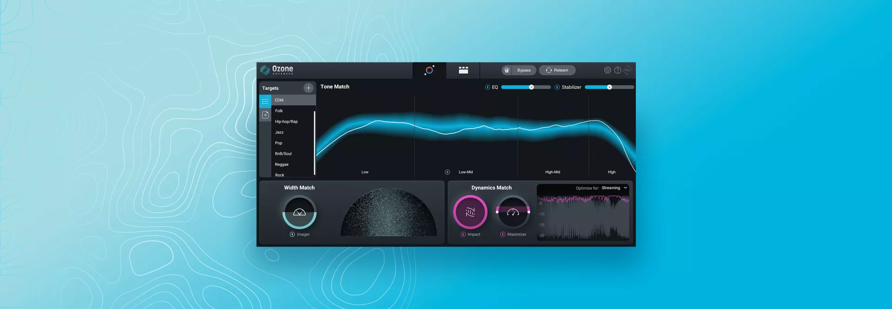
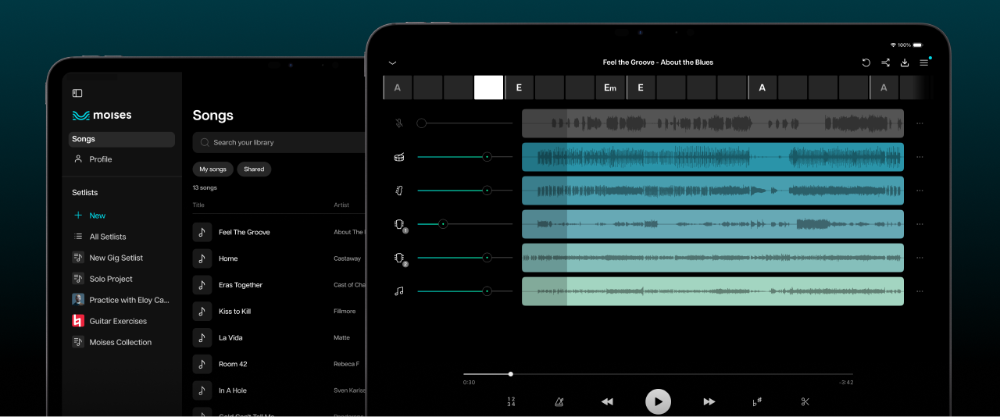

Composizione Generativa
Alcune intelligenze artificiali utilizzano modelli di deep learning per generare melodie, armonie e vere e proprie orchestrazioni, partendo da specifiche indicazioni o prompt testuali.
La tecnologia con la quale si costruiscono questi algoritmi utilizza un'architettura di reti neurali artificiali chiamata Transformer che riconosce e organizza gli imput esterni per restituire risultati sempre più accurati.
Alcuni siti web che utilizzano AI per poter produrre musica sono:
- Jukebox (OpenAI): produce brani completi con voci cantate.
- Suno: una delle piùavanzate AI per realizzare musica. Utilizza prompt per creare testi e canzoni completamente arrangiate di qualsiasi genere e in qualsiasi ligua.
Tra i possibili imput da dare in pasto all'algoritmo ci sono parole chiave sul mood del brano, sulla struttura e sul ritmo.
- Musenet: fonde stili diversi (es. Mozart + The Beatles).
Produzione & Mixing

Plugin come iZotope Ozone, Neutron e il nuovissimo Mastering Assistant di Logic,
analizzano la traccia e suggeriscono catene di effetti mirate per raggiungere un suono professionale in pochi passaggi.
Con un solo plugin sulla traccia master si può (quasi) sostituire ore di lavoro nel mastering.
- Bilanciamento automatico di volume e loudness.
- Riconoscimento degli strumenti per EQ mirate.
- Mastering assistito basato su tutte le tracce del progetto.
Personalizzazione dell'Ascolto
Le piattaforme di streaming (Spotify, Apple Music, youtube music) impiegano reti neurali e clustering per creare Daily Mix e playlist personalizzate per ogni utente.
- Collaborative filtering in tempo reale. Funziona tramite l'identificazione e la categorizzazione di utenti con gusti simili.
- Analisi di mood e tipologia dei brani da metter in coda sulla base degli ascolti precedenti.
- Apprendimento degli skip per ottimizzare la scoperta di nuova musica.
Performance Live & Strumenti Interattivi
Software come Magenta Studio e Ableton Live integrano modelli AI che reagiscono all'improvvisazione dei musicisti, generando accompagnamenti sincronizzati in tempo reale.
Didattica e Apprendimento

Piattaforme educative basate su AI analizzano l'intonazione e il timing di chi studia uno strumento, offrendo feedback personalizzato e percorsi su misura.
Una delle piattaforme di riferimento per lo studio della musica è Moises.
Moises combina una sofisticata tecnologia di separazione audio con pratiche funzionalità di istruzione musicale, creando un ecosistema completo per musicisti aspiranti e professionisti.
Funzionalità Principali:
- Sistema di separazione audio AI multistrato con estrazione di strumenti isolati.
- Rilevamento degli accordi basato sulla rete neurale con adattamento al livello di abilità.
- Motore di modifica del pitch in tempo reale con capacità di rilevamento delle chiavi.
- Sistema di analisi del tempo automatizzato con integrazione intelligente del metronomo.
- Framework di trascrizione dei testi multilingue con rilevamento automatico.